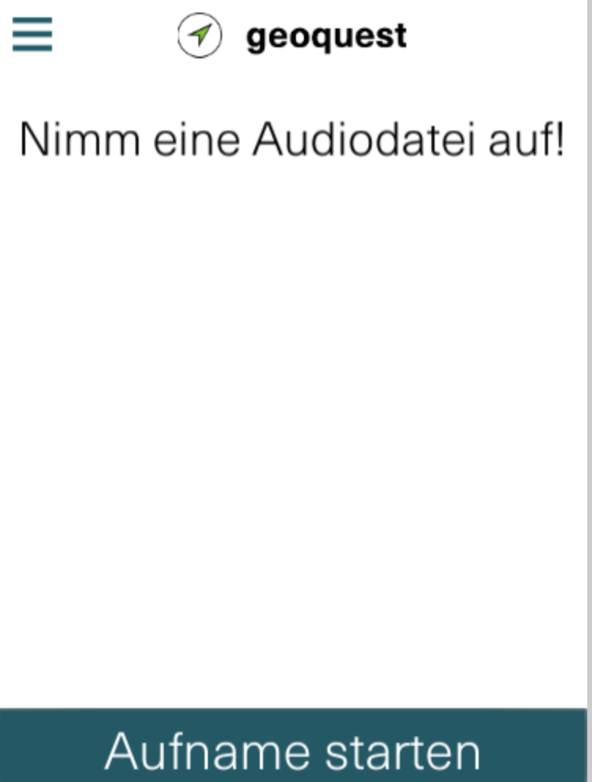
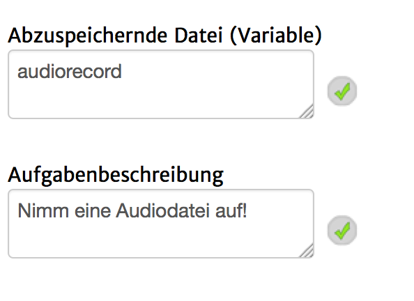

Mit diesem Seitentyp ist es möglich, den Spieler aufzudordern eine Audio-Datei mit Hilfe des im Mobilgerät integrierten Mikrofons aufzunehmen.
Dies ist aktuell leider auf einigen Geräten nicht in der Editorvoschau testbar, da es Probleme mit dem Erkennen des Mikrofons geben kann.
Auf dem Mobilgerät sieht es ungefähr so aus:

Folgende Einstellungsmöglichkeiten gibt es für diesen Seitentyp:
|  | Abzuspeicherne Datei (Variable): Der Name der Variable in die die Audio-Datei gespeichert werden soll. Im späteren Verlauf des Spiels kann die Datei über diesen Namen und dem Prefix "@_" z.B. in einer "Audio-Datei abspielen"-Aktion abgespielt werden. Bei Benutzung des Standardwertes "audiorecord", müsste also als Datei in der "Audio-Datei abspielen"-Aktion "@_audiorecord" eingegeben werden. Aufgabenbeschreibung: Der Text, welcher im oberen Bereich der Seite zu sehen ist. |